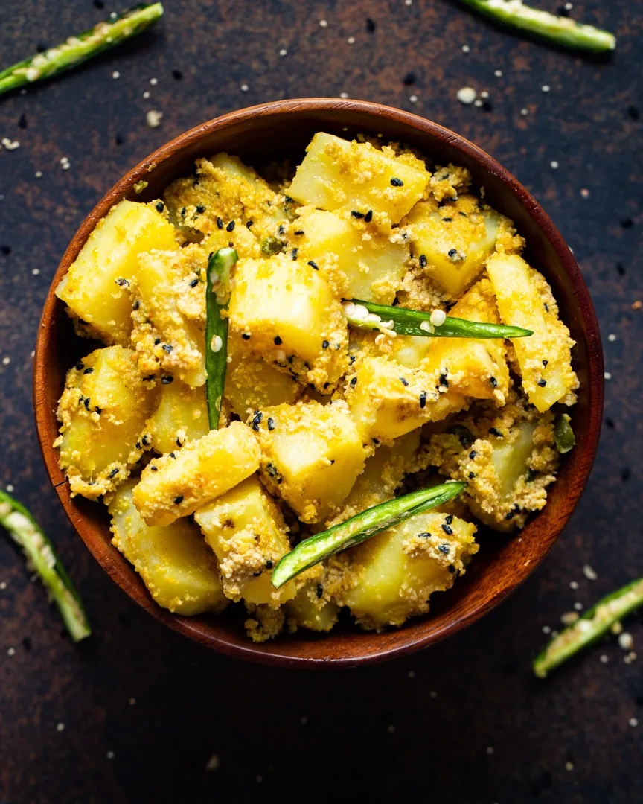

Aloo Posto

The bengali traditional dish Aloo Posto
Aloo Posto or simply potatoes (aloo) cooked in a lightly spiced poppy seeds (posto) paste
is that dish,which almost every Bengali is fond of.
There may be some exceptional cases, but those are very few.
This Aloo Posto recipe is easy to prepare, flavorful, makes for a great side dish with
a dal-bhaat (dal and rice) combination, and is also naturally vegan and gluten free.
You should definitely give this classic dish of Bengal a try.
What is Aloo Posto
“Aloo” translates to potatoes, and “posto” refers to poppy seeds in the Bengali language.
Therefore, the name of this traditional dish from Bengal. In different parts of India,
poppy seeds are known as “khus khus.” Aloo Posto features potatoes cooked in a delectable paste of
spiced poppy seeds. The dish balances the earthy flavors of potatoes with nutty poppy seeds,
spicy green chillies, fragrant nigella seeds, a few savory ground spices & seasonings,
and the distinct pungent touch of mustard oil.
Ingrediants
For posto paste
- 3 tablespoons white poppy seeds (khus khus)
- ¼ cup water for soaking
- 1 tablespoon water for grinding
- 1 green chilli roughly chopped or 1 teaspoon, chopped
other ingredients
- 300 grams (2 large) potatoes
- 2 tablespoons mustard oil
- ½ teaspoon nigella seeds (kalonji)
- ¼ teaspoon turmeric powder optional
- 2 green chilies whole with their crowns removed, not slit
- salt according to taste
- ½ to ⅔ cup water or add as required
- ¼ teaspoon sugar (optional)
Steps
- Soak poppy seeds in water for two hours.
Strain and add to a grinder jar, along with 2 green chillies and 75 g water.
Grind to a coarse paste. Set aside.
- Peel and cut the potatoes in 1-cm cubes. If using onions, slice them too.
- Heat mustard oil in a pan.
Once smoking lightly and pale yellow, add the onions.
Fry until lightly coloured (about 1 minute).
Drain from the oil and set aside.
- Temper the oil with dried red chillies and kaalo jeere.
Add the potatoes. Fry for about 5 minutes.
The potatoes should not brown, so keep stirring them regularly.
- Add the poppy-seed paste, along with salt and sugar.
Cook on low heat until the raw smell of poppy paste goes away.
This should take about 4 minutes
- Continue cooking on low heat, with lid on until the potatoes are soft.
Once in a while, when the pan dries out, you may have to add a splash
of hot water to ensure the potatoes don't stick to the pan.
- Finish with 2 slit green chillies and 1 tsp of mustard oil.
- If you fried the onions earlier, add those now too, and give a final stir,
before serving with hot rice and dal, or with rooti.